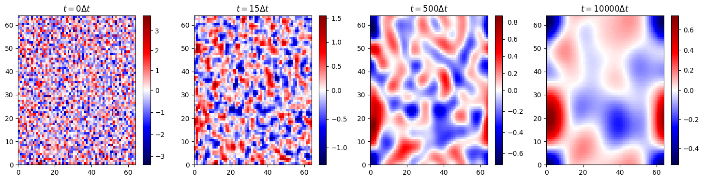

Learning the Cahn-Hilliard Equation with Fourier Neural Operators
Motivation
The Cahn-Hilliard equation models phase separation — the way a mixed binary system (two substances, or two phases of one) spontaneously un-mixes into distinct domains that slowly coarsen over time. It is a fourth-order, nonlinear, stiff PDE, and resolving its dynamics with a classical solver is expensive: the stiffness forces tiny timesteps, so marching a single simulation out to long times can mean hundreds of thousands of steps.
This project asks whether a Fourier Neural Operator (FNO) can learn the equation's dynamics and act as a fast surrogate. Unlike an ordinary network that maps vectors to vectors, an FNO learns a mapping between functions — here, from the recent history of the concentration field to its future. If it works, you get a solver that advances the field in a single forward pass instead of thousands of fine timesteps, and that generalizes across resolutions because its core operation lives in Fourier space.
Generating the Data
Training data comes from a high-fidelity Dedalus spectral solver run on the non-dimensional Cahn-Hilliard equation,
$$ \frac{\partial u}{\partial t} = \nabla^2!\left(\alpha^2 u^3 - u - \nabla^2 u\right), $$
on a $64 \times 64$ periodic grid with $\Delta t = 10^{-5}$, $\Delta x = 0.01$, and $\alpha = 0.1$. Each run starts from random noise and is integrated forward; the figure below shows a single sample evolving from initial static to fully coarsened phase domains.

At $t = 0$ the field is pure noise; by a few steps in, fine structure begins to organize; and over thousands of steps the characteristic blob-like domains emerge and grow. This whole trajectory is what the FNO has to learn to reproduce.
The Fourier Neural Operator
The model is a standard 2D FNO. Its key building block is the spectral convolution layer, which transforms the field into Fourier space, keeps only the lowest modes, multiplies them by learned complex weights, and transforms back:
class SpectralConv2d(nn.Module):
def __init__(self, in_channels, out_channels, modes1, modes2):
super().__init__()
self.modes1, self.modes2 = modes1, modes2 # # of Fourier modes kept
scale = 1 / (in_channels * out_channels)
self.weights1 = nn.Parameter(scale * torch.rand(
in_channels, out_channels, modes1, modes2, dtype=torch.cfloat))
self.weights2 = nn.Parameter(scale * torch.rand(
in_channels, out_channels, modes1, modes2, dtype=torch.cfloat))
def compl_mul2d(self, input, weights):
# FFT -> keep low modes -> multiply -> iFFT
return torch.einsum("bixy,ioxy->boxy", input, weights)
Truncating to a fixed number of modes is what makes the operator resolution independent: the learned weights act on frequencies, not pixels, so the same model can be applied to grids of different sizes. I used 16 modes and a channel width of 20.
The learning task is set up as a sliding window in time: the input is a stack of 10 consecutive timesteps of the field, and the target is the next 10 timesteps.
train_a = data[:n_train, :, :, :10] # input: 10 past frames
train_u = data[:n_train, :, :, 10:] # target: next 10 frames
Training uses an 80/20 train/test split, the Adam optimizer at a learning rate of $10^{-3}$, MSE loss, and a learning-rate scheduler, for up to 10 epochs. Both the training and test loss fall by more than an order of magnitude and track each other closely, so the model isn't simply overfitting.

Results
On held-out data the FNO reproduces the true field strikingly well. The panels below compare the ground-truth field, the FNO prediction, and their pointwise difference (note the logarithmic color scale on the difference) for a single prediction window — the MSE is $\approx 1.5 \times 10^{-4}$, and the error is diffuse and tiny rather than concentrated on any structure.

The harder test is autoregressive rollout: feed the model's own predictions back in as input and let it march far beyond the window it was trained on. Here the picture is more nuanced. Errors accumulate step by step, as they must for any learned time-stepper, but the amount of training matters enormously. Rolling out to 500 timesteps, the under-trained models saturate near $10^{-1}$ error almost immediately, while the fully trained 10-epoch model keeps its error around $10^{-2}$ across the entire horizon.

The takeaways:
- As a one-shot surrogate, the FNO works well. It predicts the next block of Cahn-Hilliard evolution to ~$10^{-4}$ MSE in a single forward pass, far faster than re-running the fine-timestep Dedalus solver.
- Long rollouts are the real challenge. Autoregressive error compounds, so pushing predictions hundreds of steps out degrades accuracy — though more training visibly flattens that growth, suggesting the rollout stability is partly a matter of how well the operator has been fit.
- The spectral structure pays off. Because the model operates on a fixed set of Fourier modes, it is naturally tied to the same spectral picture that makes Cahn-Hilliard tractable in the first place, and it inherits resolution flexibility for free.
This is an encouraging proof of concept that operator learning can stand in for an expensive stiff PDE solver, with the next obvious direction being techniques to tame the autoregressive error growth for genuinely long-horizon prediction.